England > Eastern England
CASTLE RISING CASTLE
One of the largest Keeps in Britain which was built solely as a status symbol, Castle Rising Castle was later deemed suitable to act as a prison fit for a Queen; Edward III used the castle to confine Queen Isabella, his traitorous mother and former wife of Edward II, after the downfall of her lover Roger Mortimer, Earl of March.
History
Gallery
Getting There
Castle Rising Castle was built around 1140 by William de Albini. He had married Adeliza of Louvain, widow of Henry I, and had acquired significant lands as part of the union. At Castle Rising he started construction of a large Keep as a demonstration of his enhanced wealth and power. The structure was not only one of the largest surviving examples in the UK but was also highly ornate - it is possible that de Albini was attempting to imitate the large Keep at Norwich Castle . It was built within an oval inner bailey surrounded by earthworks which initially were lower than those visible today enabling the structure, which would also have been white-washed for effect, to be visible for miles around. Two further enclosures, outer baileys, were built to the east and west with both protected by further earthworks. A grid-plan settlement was laid out to the north of the castle and a park was enclosed to the south.
At some point during the late twelfth or early thirteen centuries the earthworks surrounding the castle were significantly enhanced. The reason for this is unknown although it was obviously in response to some threat. The 1173/4 rebellion by Hugh Bigod, Earl of Norfolk has been cited as the most likely reason especially given his rivalry with de Albini. The fact that an eleventh century ecclesiastical building was buried into the rampart during the upgrades suggests a degree of urgency in construction whilst a nearby ringwork at Keeper's Wood, which is presumed to be a siege-castle, may represent military action taken against Castle Rising around this time.
In 1332 Queen Isabella, former wife to Edward II, was imprisoned at Castle Rising by her son, Edward III. Isabella had plotted with Roger Mortimer, Earl of March to depose her husband. Edward II was forced to abdicate and was imprisoned (and perhaps murdered) at Berkeley Castle . Mortimer and Isabella had hoped to rule through her son, Edward III, but the new king was not prepared to be a puppet. In 1330, whilst with Mortimer was staying at Nottingham Castle , a number of nobles loyal to the new King infiltrated the tunnel system under that castle and captured the Earl. He was taken to the Tower of London where he was imprisoned and was later executed at Tyburn. Queen Isabella, for her part in the power-struggle, was initially held at Berkhamsted Castle but then moved to her own Castle Rising Castle where she was effectively imprisoned, albeit in considerable luxury and with extensive freedoms. She remained a prisoner at the castle until 1358 when, shortly before her death, she joined a nunnery.
Upon Isabella's death in 1358 the castle passed to Edward, Prince of Wales (later known as the Black Prince) who spent significant sums on maintaining the property. Thereafter it fell into disuse and quickly became ruin. Whilst it was granted by Henry VIII to the Howard family in 1544, it was never re-occupied.
Bibliography
Allen, R (1976). English Castles . Batsford, London.
Creighton, O.H (2002). Castles and Landscapes: Power, Community and Fortification in Medieval England . Equinox, Bristol.
Douglas, D.C and Rothwell, H (ed) (1975). English Historical Documents Vol 3 (1189-1327) . Routledge, London.
Emery, A (1996). Greater Medieval Houses of England and Wales . Cambridge University Press, Cambridge.
Gravett, C (2003). Norman Stone Castles (1) . Osprey, Oxford.
Johnson, P (2006). Castles from the Air: An Aerial Portrait of Britain's Finest Castles . Bloomsbury, London.
Lawrence, R (1588). Map of Rising Chase, 1588 . Norfolk Record Office, Norfolk.
Liddiard, R (2005). Castles in Context: Power, Symbolism and Landscape 1066-1500 . Macclesfield.
Thompson, M.W (1987). The Decline of the Castle . London.
What's There?
Castle Rising Castle is a hugely impressive site. The central feature is the large Keep, which was one of the biggest Norman fortifications, and remains decorated with ornate stonework. The structure is surrounded by extensive earthworks.
Keep . The Keep is situated within substantial earthworks.
Gatehouse . The remains of the gatehouse survive.
Built to Impress . The entrance passage to the Keep (left) and exterior elaborate decoration made a clear statement about the wealth and power of the de Albini family.
Located in the small village of Castle Rising the actual castle itself is well sign-posted and has a dedicated car park.
NR1 3JU
52.628397N 1.296075E
(c) Copyright 2019 CastlesFortsBattles.co.uk
Recovered original photographs, plans and images
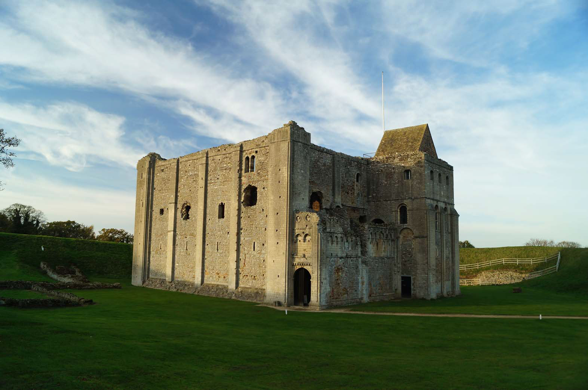
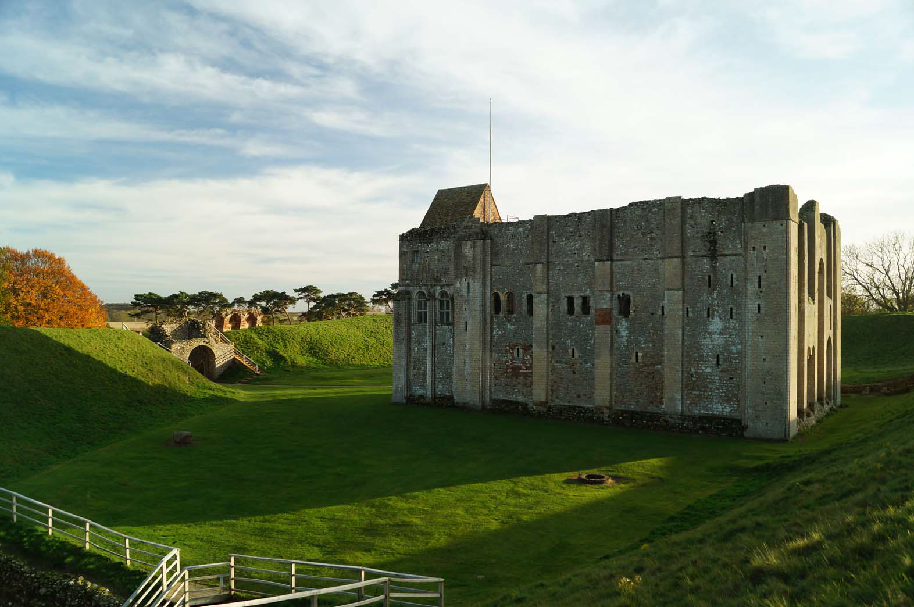
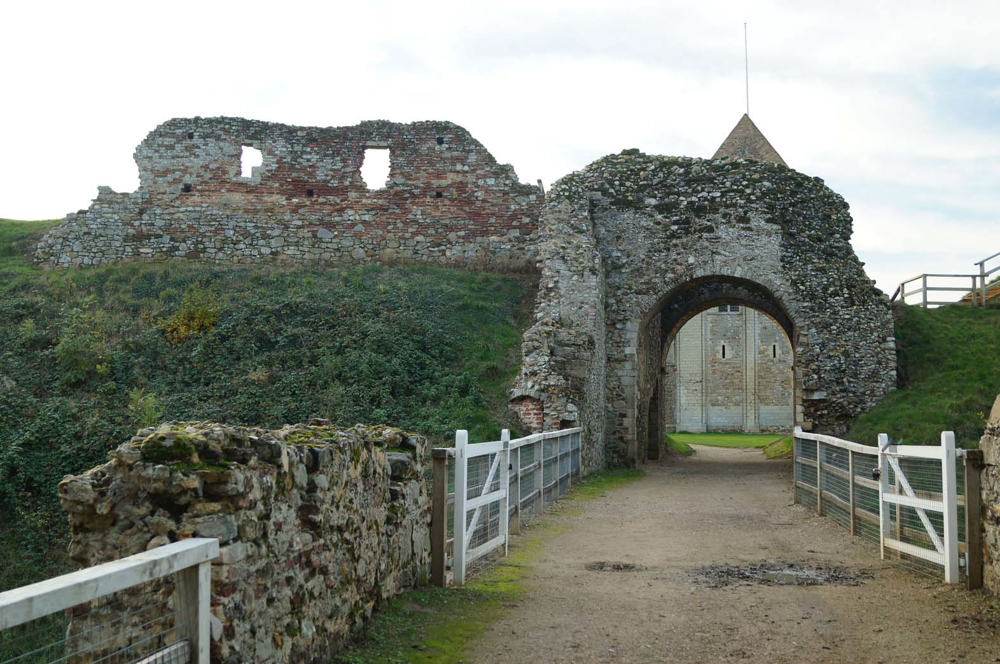
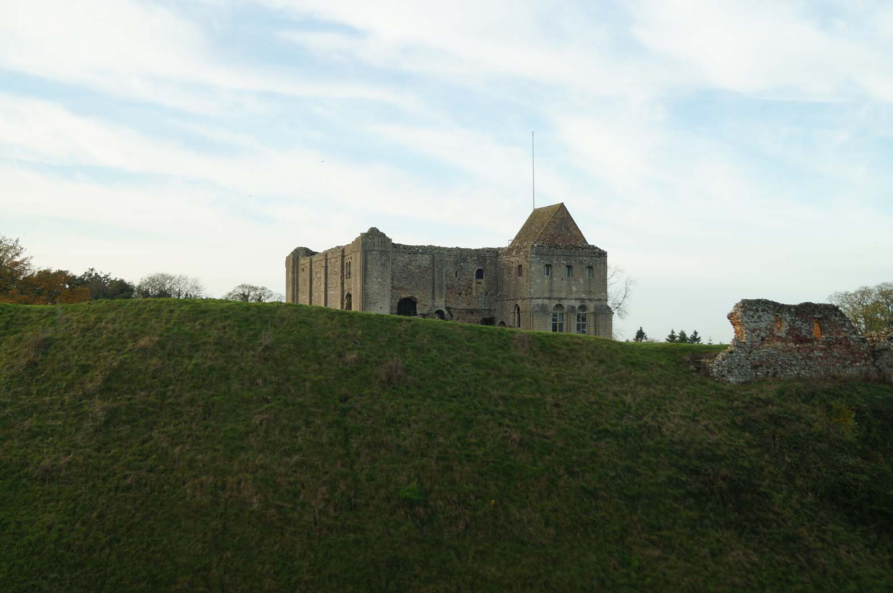
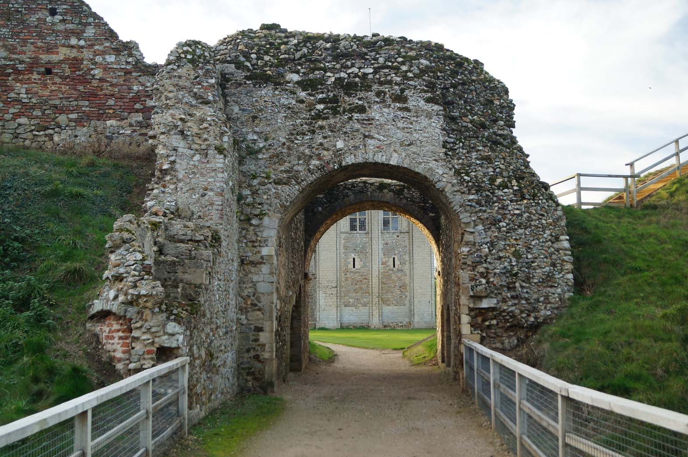
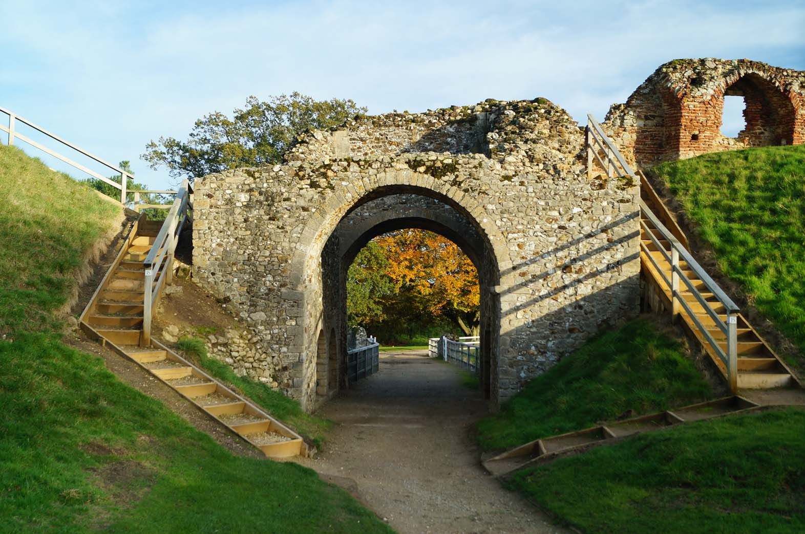
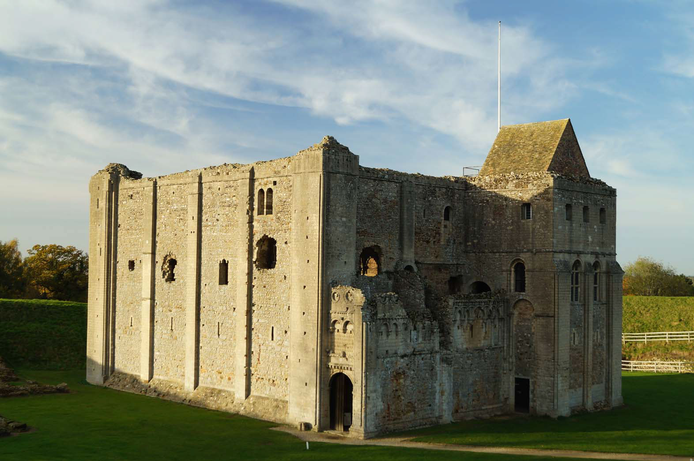
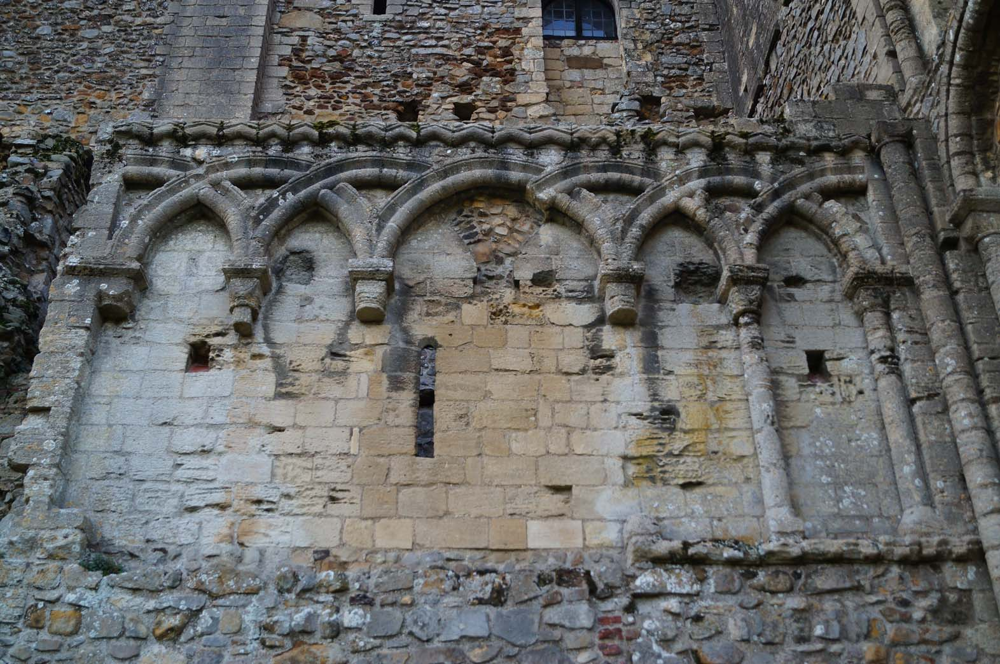
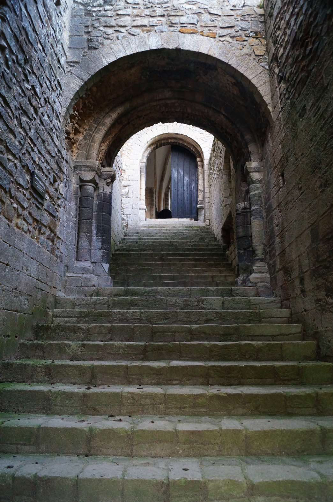
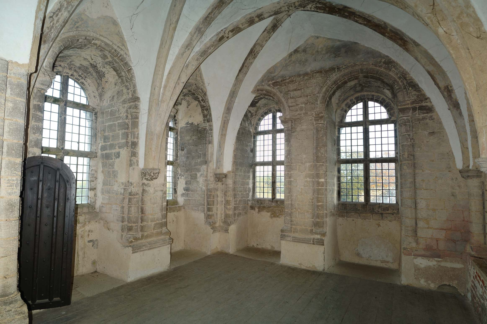
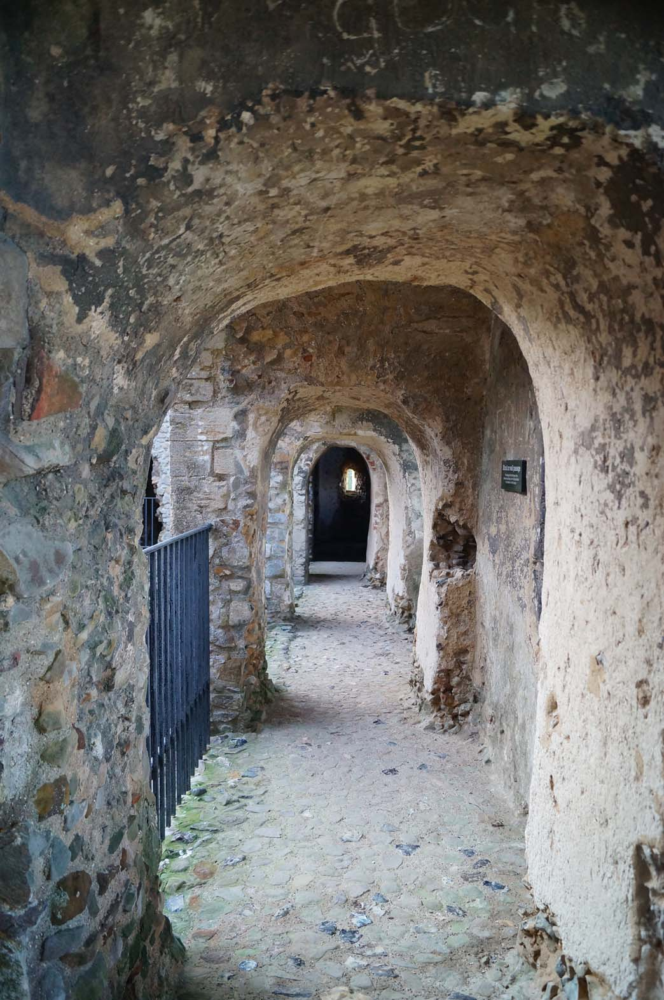